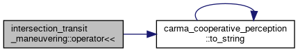

Classes | |
| class | IntersectionTransitManeuveringNode |
| ROS node for the inlanecruising_plugin. More... | |
| class | Servicer |
Functions | |
| std::ostream & | operator<< (std::ostream &os, carma_planning_msgs::msg::ManeuverParameters m) |
| Stream operators for carma_planning_msgs::msg::Maneuver and nested messages. NOTE: Does not print meta data. More... | |
| std::ostream & | operator<< (std::ostream &os, carma_planning_msgs::msg::IntersectionTransitStraightManeuver m) |
| std::ostream & | operator<< (std::ostream &os, carma_planning_msgs::msg::IntersectionTransitLeftTurnManeuver m) |
| std::ostream & | operator<< (std::ostream &os, carma_planning_msgs::msg::IntersectionTransitRightTurnManeuver m) |
| std::ostream & | operator<< (std::ostream &os, carma_planning_msgs::msg::LaneFollowingManeuver m) |
| std::ostream & | operator<< (std::ostream &os, carma_planning_msgs::msg::Maneuver m) |
Function Documentation
◆ operator<<() [1/6]
| std::ostream & intersection_transit_maneuvering::operator<< | ( | std::ostream & | os, |
| carma_planning_msgs::msg::IntersectionTransitLeftTurnManeuver | m | ||
| ) |
Definition at line 65 of file intersection_transit_maneuvering.cpp.
65 {
66 os << "parameters: { " << m.parameters << " }"
67 << " start_dist: " << m.start_dist
68 << " end_dist: " << m.end_dist
69 << " start_speed: " << m.start_speed
70 << " end_speed: " << m.end_speed
73 << " starting_lane_id: " << m.starting_lane_id
74 << " ending_lane_id: " << m.ending_lane_id;
75 return os;
76}
auto to_string(const UtmZone &zone) -> std::string
Definition: utm_zone.cpp:21
References carma_cooperative_perception::to_string().
Here is the call graph for this function:
◆ operator<<() [2/6]
| std::ostream & intersection_transit_maneuvering::operator<< | ( | std::ostream & | os, |
| carma_planning_msgs::msg::IntersectionTransitRightTurnManeuver | m | ||
| ) |
Definition at line 78 of file intersection_transit_maneuvering.cpp.
78 {
79 os << "parameters: { " << m.parameters << " }"
80 << " start_dist: " << m.start_dist
81 << " end_dist: " << m.end_dist
82 << " start_speed: " << m.start_speed
83 << " end_speed: " << m.end_speed
86 << " starting_lane_id: " << m.starting_lane_id
87 << " ending_lane_id: " << m.ending_lane_id;
88 return os;
89}
References carma_cooperative_perception::to_string().
Here is the call graph for this function:

◆ operator<<() [3/6]
| std::ostream & intersection_transit_maneuvering::operator<< | ( | std::ostream & | os, |
| carma_planning_msgs::msg::IntersectionTransitStraightManeuver | m | ||
| ) |
Definition at line 52 of file intersection_transit_maneuvering.cpp.
52 {
53 os << "parameters: { " << m.parameters << " }"
54 << " start_dist: " << m.start_dist
55 << " end_dist: " << m.end_dist
56 << " start_speed: " << m.start_speed
57 << " end_speed: " << m.end_speed
60 << " starting_lane_id: " << m.starting_lane_id
61 << " ending_lane_id: " << m.ending_lane_id;
62 return os;
63}
References carma_cooperative_perception::to_string().
Here is the call graph for this function:
◆ operator<<() [4/6]
| std::ostream & intersection_transit_maneuvering::operator<< | ( | std::ostream & | os, |
| carma_planning_msgs::msg::LaneFollowingManeuver | m | ||
| ) |
Definition at line 91 of file intersection_transit_maneuvering.cpp.
91 {
92 os << "parameters: { " << m.parameters << " }"
93 << " start_dist: " << m.start_dist
94 << " end_dist: " << m.end_dist
95 << " start_speed: " << m.start_speed
96 << " end_speed: " << m.end_speed
99 << " lane_ids: [ ";
100
103
104 os << "]";
105
106 return os;
107
108}
References process_bag::i, and carma_cooperative_perception::to_string().
Here is the call graph for this function:
◆ operator<<() [5/6]
| std::ostream & intersection_transit_maneuvering::operator<< | ( | std::ostream & | os, |
| carma_planning_msgs::msg::Maneuver | m | ||
| ) |
Definition at line 110 of file intersection_transit_maneuvering.cpp.
110 {
111
112 os << "Maneuver Type: " << unsigned(m.type);
113 switch(m.type) {
114 case carma_planning_msgs::msg::Maneuver::INTERSECTION_TRANSIT_STRAIGHT:
115 os << m.intersection_transit_straight_maneuver;
116 break;
117 case carma_planning_msgs::msg::Maneuver::INTERSECTION_TRANSIT_LEFT_TURN:
118 os << m.intersection_transit_left_turn_maneuver;
119 break;
120 case carma_planning_msgs::msg::Maneuver::INTERSECTION_TRANSIT_RIGHT_TURN:
121 os << m.intersection_transit_right_turn_maneuver;
122 break;
123 case carma_planning_msgs::msg::Maneuver::LANE_FOLLOWING:
124 os << m.lane_following_maneuver;
125 break;
126 default:
127 os << " not yet supported for printing. ";
128 }
129
130 return os;
131}
◆ operator<<() [6/6]
| std::ostream & intersection_transit_maneuvering::operator<< | ( | std::ostream & | os, |
| carma_planning_msgs::msg::ManeuverParameters | m | ||
| ) |
Stream operators for carma_planning_msgs::msg::Maneuver and nested messages. NOTE: Does not print meta data.
Definition at line 43 of file intersection_transit_maneuvering.cpp.
43 {
44 os << "maneuver_id: " << m.maneuver_id
45 << " negotiation_type: " << unsigned(m.negotiation_type)
46 << " planning_strategic_plugin: " << m.planning_strategic_plugin
47 << " presence_vector: " << unsigned(m.presence_vector)
48 << " planning_tactical_plugin: " << m.planning_tactical_plugin;
49 return os;
50}